Chapter 3 データの可視化
相関の復習とデータの可視化を学ぶ。
- 相関係数
- グラフの種類
- グラフの作り方
必要なパッケージのインストール及びロードをする。
install.packages("tidyverse", "MASS") #tidyverseはデータの操作に便利な様々なパッケージを含んでいる（ggplot2, dplyrなど複数のパッケージのセット）
library(tidyverse, MASS) Rにはサンプルデータが予めいくつか入っている。グラフ作成の練習として，その中からいくつかのデータを使う。head()を使うと，データの最初の数行だけが表示される。
head(iris)irisは，フィッシャーの有名なアヤメのデータ。それぞれ50個体の萼（がく）片と花弁の長さと幅が入っている。
他にもたくさんある。library(help = "datasets")で確認できる。
3.1 相関
フィッシャーのアヤメのデータを使って，相関の復習を行う。がく片と花弁の長さの関係を見てみる。 まずは散布図を作る。とりあえず何も考えずに以下のプログラムを実行してみよう。
#「ggplot2::」はなくてもOK。これは，「ggplot2パッケージに含まれているqplot()関数を使います」という意味。
ggplot2::qplot(data = iris, Sepal.Length, Petal.Length)
ggplot2::qplot(data = iris, Petal.Length, Sepal.Width)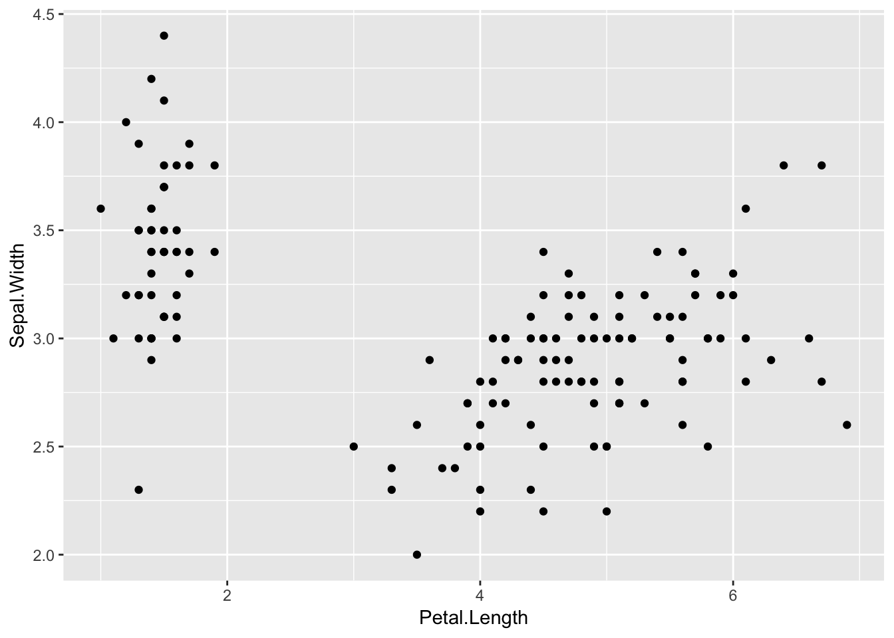
3.1.1 ピアソンの積率相関係数
変数\(x\)と変数\(y\)の積率相関係数\(r\)は，以下の式で求められる。
\[ r = \frac{\sigma_{xy}}{\sigma_{x}\sigma_{y}} \]
\(\sigma_{xy}\)は\(x\)と\(y\)の共分散で，\(\sigma_{xy} = \sum^n_{i=1}(x_{i}-\bar{x})(y_{i}-\bar{y})\)である（\(\bar{x}\)は\(x\)の標本平均）。\(\sigma_{x}\)と\(\sigma_{y}\)は\(x\)と\(y\)それぞれの標本標準偏差である。
変数\(X\)と変数\(Y\)の相関係数\(r\)が \(r > 0\)のとき，「変数\(X\)と変数\(Y\)の間に正の相関関係がある」という。\(r < 0\)のときは，「変数\(X\)と変数\(Y\)の間に負の相関関係がある」という。正の相関関係は，一方の変数の量が増えればもう一方の変数も増えるという関係のことを言う。負の相関関係は，一方が増えればもう一方が減るという関係のことを言う。
試しに，様々な相関係数の場合の散布図を見てみよう。
r = 0.5 #rの値を変えてプロットを確認してみよう
x = rnorm(1000, mean=0, sd=1) #平均0，標準偏差1の正規分布から1,000個乱数を作る。
y = r*x + sqrt(1-r^2)*rnorm(1000, mean=0, sd=1)
cor.test(x, y)##
## Pearson's product-moment correlation
##
## data: x and y
## t = 20.361, df = 998, p-value < 2.2e-16
## alternative hypothesis: true correlation is not equal to 0
## 95 percent confidence interval:
## 0.4964219 0.5841188
## sample estimates:
## cor
## 0.541743qplot(x, y) + ggtitle(r)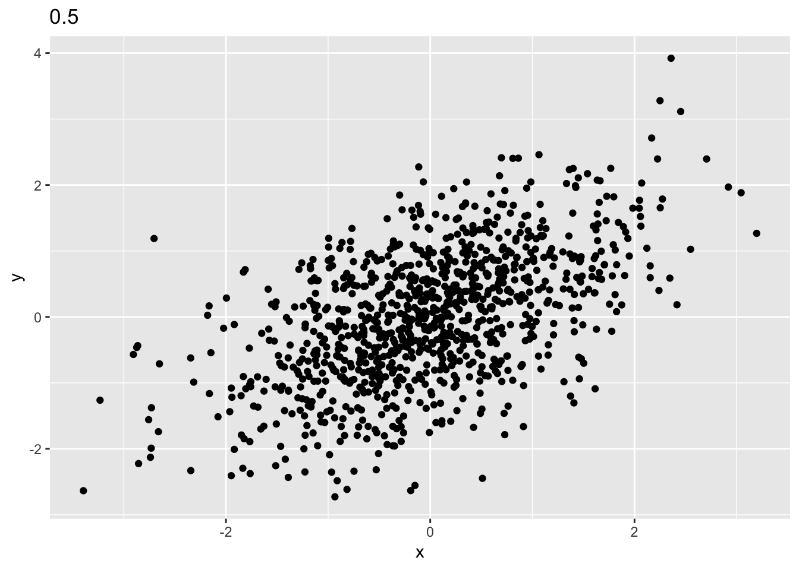
相関係数の絶対値の大きさが，その相関関係の強さを意味する。一般的に， \(.20 < |r| < .40\) くらいを「 弱い相関」，\(.40 < |r| < .70\)くらいを「強い相関」， \(|r| > .70\) くらいを「かなり強い相関」と表現する。
しかし，分野にもよるし，相関係数の強弱の判断はいわば「研究者の主観」である（社会調査においては，\(|r| = .10\)でも意味のある相関として扱う場合もある）。また，相関係数が有意かどうかにもよる。
Rでは，相関係数を求めるための関数cor.test()がある。相関を求めたい二つの変数を入れれば，その相関係数と相関係数の有意性検定（母集団の相関係数がゼロから離れているか）の結果が出力される。
cor.test(iris$Sepal.Length, iris$Petal.Length)##
## Pearson's product-moment correlation
##
## data: iris$Sepal.Length and iris$Petal.Length
## t = 21.646, df = 148, p-value < 2.2e-16
## alternative hypothesis: true correlation is not equal to 0
## 95 percent confidence interval:
## 0.8270363 0.9055080
## sample estimates:
## cor
## 0.8717538cor.test(iris$Petal.Length, iris$Sepal.Width)##
## Pearson's product-moment correlation
##
## data: iris$Petal.Length and iris$Sepal.Width
## t = -5.7684, df = 148, p-value = 4.513e-08
## alternative hypothesis: true correlation is not equal to 0
## 95 percent confidence interval:
## -0.5508771 -0.2879499
## sample estimates:
## cor
## -0.42844013.1.2 スピアマンの順位相関係数
Rでは，cor.test()でスピアマンの順位相関係数も求めることが出来る。オプションでmethod = "spearman"と入れれば良い（methodに何も指定しないとデフォルトでピアソンの積率相関係数が算出される）。
cor.test(iris$Sepal.Length, iris$Petal.Length, method = "spearman")##
## Spearman's rank correlation rho
##
## data: iris$Sepal.Length and iris$Petal.Length
## S = 66429, p-value < 2.2e-16
## alternative hypothesis: true rho is not equal to 0
## sample estimates:
## rho
## 0.8818981cor.test(iris$Petal.Length, iris$Sepal.Width, method = "spearman")##
## Spearman's rank correlation rho
##
## data: iris$Petal.Length and iris$Sepal.Width
## S = 736637, p-value = 0.0001154
## alternative hypothesis: true rho is not equal to 0
## sample estimates:
## rho
## -0.30963513.1.3 外れ値の影響
データに極端な値がある場合，ピアソンの相関係数では結果が歪む恐れがある。
library(MASS) #MASSパッケージにあるサンプルデータAnimalsを使う
head(Animals) #28種の動物の体重と脳重量のデータ## body brain
## Mountain beaver 1.35 8.1
## Cow 465.00 423.0
## Grey wolf 36.33 119.5
## Goat 27.66 115.0
## Guinea pig 1.04 5.5
## Dipliodocus 11700.00 50.0qplot(data=Animals, body, brain)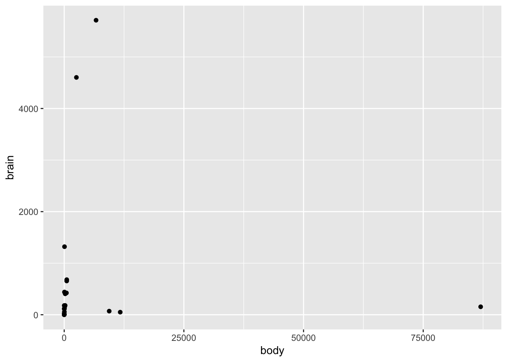
cor.test(Animals$body, Animals$brain) #Pearsonの相関係数を求める##
## Pearson's product-moment correlation
##
## data: Animals$body and Animals$brain
## t = -0.027235, df = 26, p-value = 0.9785
## alternative hypothesis: true correlation is not equal to 0
## 95 percent confidence interval:
## -0.3776655 0.3684700
## sample estimates:
## cor
## -0.005341163極端に体重が大きくかつ脳重量の小さい種が影響している。
- 相関係数を鵜呑みにするのではなく，必ず散布図を確認する。
- 対処法としては，
- 外れ値を除去して相関を見る。
- スピアマンの順位相関係数を見る。順位相関はデータを順位（1位,2位,3位,…）に変換して相関係数を出したものであり，これにより外れ値の影響が調整される。
Animal_2 = dplyr::filter(Animals, body < 10000)
qplot(data=Animal_2, body, brain)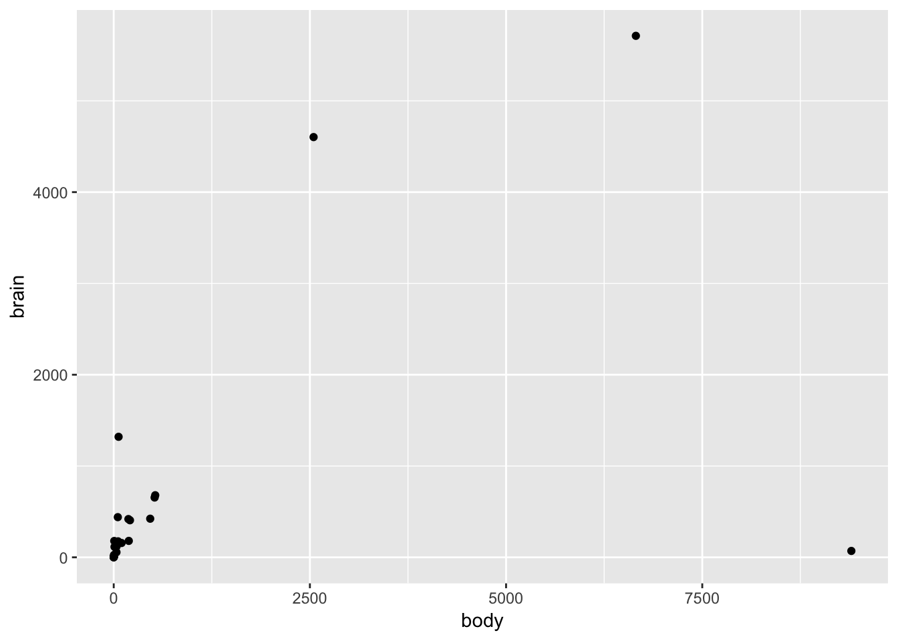
cor.test(Animal_2$body, Animal_2$brain) #Pearsonの相関係数を求める##
## Pearson's product-moment correlation
##
## data: Animal_2$body and Animal_2$brain
## t = 2.8764, df = 24, p-value = 0.008308
## alternative hypothesis: true correlation is not equal to 0
## 95 percent confidence interval:
## 0.1479923 0.7471395
## sample estimates:
## cor
## 0.5063195cor.test(Animals$body, Animals$brain, method="spearman") #外れ値除去前のデータでSpearmanの相関係数を求める##
## Spearman's rank correlation rho
##
## data: Animals$body and Animals$brain
## S = 1036.6, p-value = 1.813e-05
## alternative hypothesis: true rho is not equal to 0
## sample estimates:
## rho
## 0.71629943.1.4 相関関係と因果関係
因果関係とは，原因と結果の関係である（X -> Y：XがYの原因である）。相関関係はあくまで，一方の変数の増減ともう一方の変数の増減に関係があることである（X <-> Y）。
XとYとの間の相関係数を求めて有意な相関があったとしても，両者の間に因果関係があるとは結論付けることはできない。
因果関係がないのに相関関係があるように見える例（中室・津川(2017)より）。
- アイスクリームの売上が高いと水死者が増える（第3の要因：「暑さ」という共通の要因）。
- 警察官が多い街ほど犯罪が多い（逆の因果：犯罪が多いところにたくさん警察官を配置している）。
- 大気中の二酸化炭素量が増えるほど海賊が増える（偶然）。
3.2 データの可視化（＊）
平均値や相関係数を計算する前に，グラフを作ってデータの分布を確かめる習慣をつけよう（データの可視化）。
以下では，Rのggplot2パッケージを使って代表的なグラフを作成してみた。ggplot2を使ったグラフの作成方法については覚える必要はない。あくまで，データを可視化する手段として，どのようなグラフがよく使われるかを例として挙げる。
3.2.1 散布図（＊）
p <- ggplot(data = iris, aes(x=Sepal.Length, y=Petal.Length)) +
geom_point()
p
3.2.2 ヒストグラム（＊）
p <- ggplot(data = cars, aes(x=dist)) +
geom_histogram()
p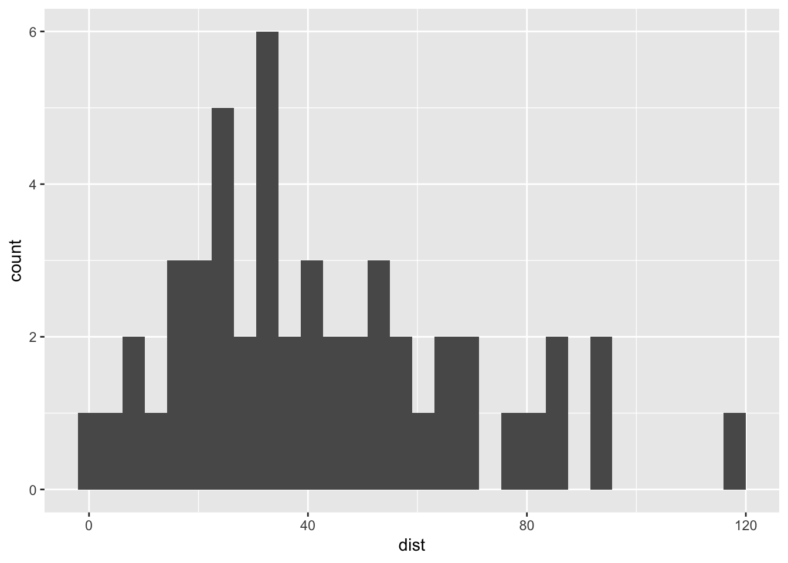
3.2.3 箱ひげ図（＊）
最小値，第一分位点，中央値，第三分位点，最大値を示す（外れ値は点で示される）。
p <- ggplot(data = InsectSprays, aes(x=spray, y=count)) +
geom_boxplot()
p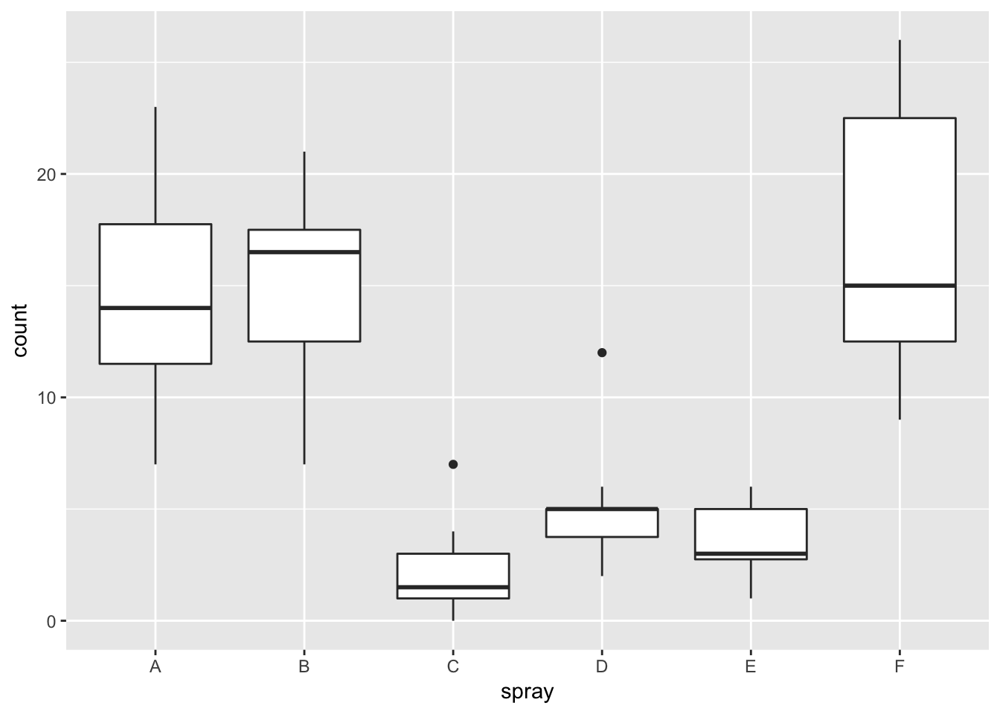
3.2.4 棒グラフ（＊）
#サンプルデータをつくる: あやめの種ごとのがくの幅の平均
iris_mean <- data.frame(
Sepecies = c("setosa", "versicolor", "virginica"),
Width = c(3.43, 2.77, 2.97)
)
p <- ggplot(data = iris_mean, aes(x=Sepecies, y=Width)) +
geom_bar(stat = "identity")
p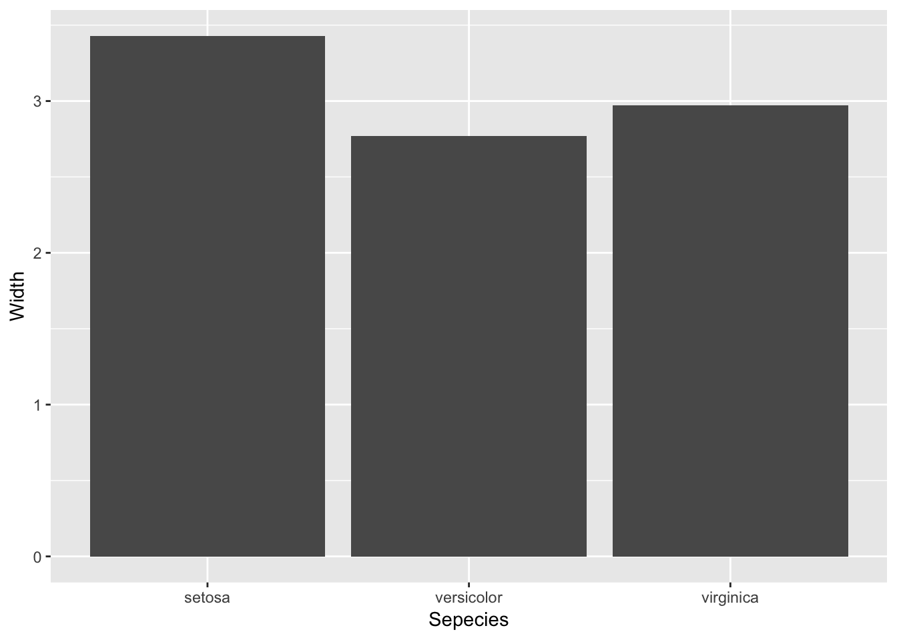
3.2.5 折れ線グラフ（＊）
#サンプルデータをつくる: 10日間の気温の変化
temperature <- data.frame(
Days = 1:10,
Celsius = c(17.2, 17.5, 18.1, 18.8, 19.0, 19.2, 19.7, 20.2, 20.5, 20.1)
)
p <- ggplot(data = temperature, aes(x=Days, y=Celsius)) +
geom_line()
p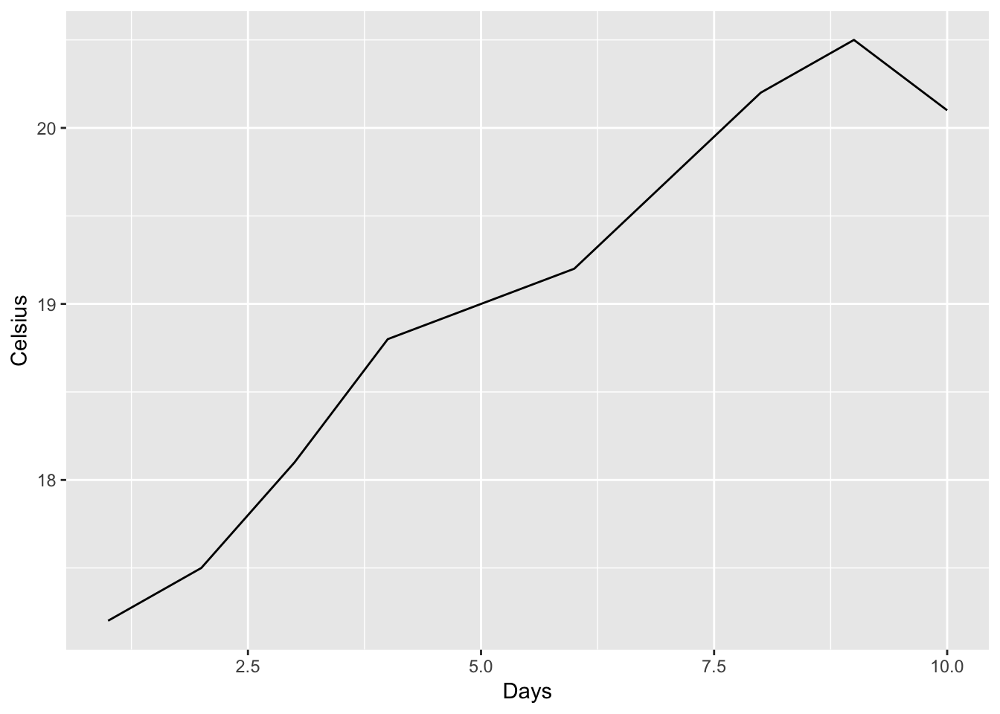
3.2.6 応用（＊）
p <- ggplot(data = iris, aes(x=Sepal.Length, y=Petal.Length)) +
geom_point(aes(shape = Species))
p <- p + xlab("Length of Sepal") + ylab("Length of Petal")
p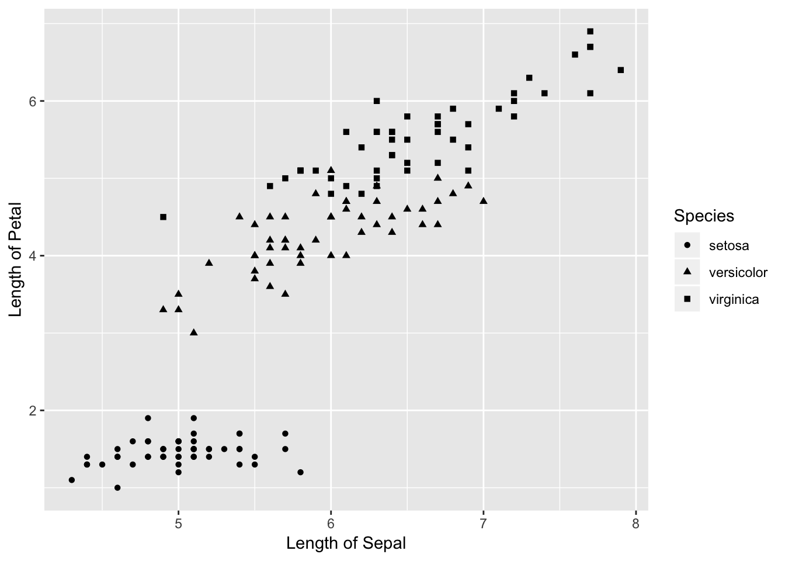
p <- ggplot(data = iris, aes(x=Sepal.Length, y=Petal.Length)) +
geom_point()
p <- p + facet_wrap(~Species)
p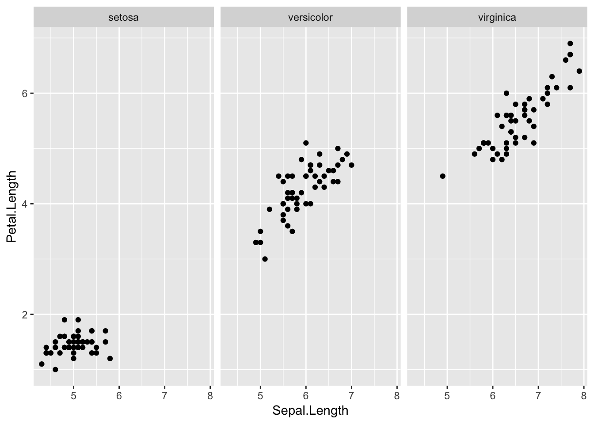
p <- ggplot(data = ChickWeight, aes(x=weight)) +
geom_histogram() + facet_wrap(~Diet)
p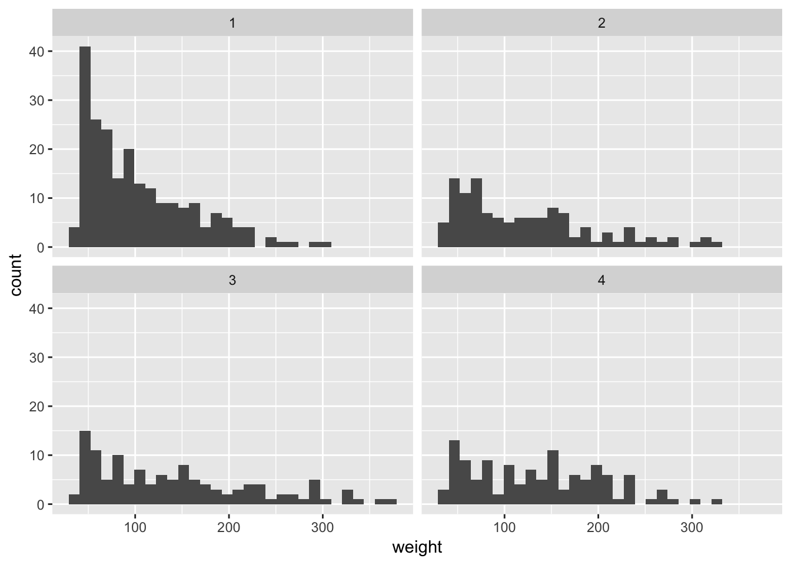
3.2.7 qplot関数を使った簡単なグラフの作り方
ggolot2パッケージのqplot()でも手っ取り早くグラフを作成することが出来る。とりあえずデータの傾向を見たいだけなら，qplot()を使うのが良い。x軸もしくはy軸に指定したい変数を入れればできるので，これくらいは覚えておくと良い。
x軸とy軸に表示する変数を2つ入れれば散布図，x軸の変数1つだけならヒストグラムがデフォルトで表示される。geomでグラフの種類を指定することも可能。
qplot(data = iris, x = Sepal.Length, y = Petal.Length)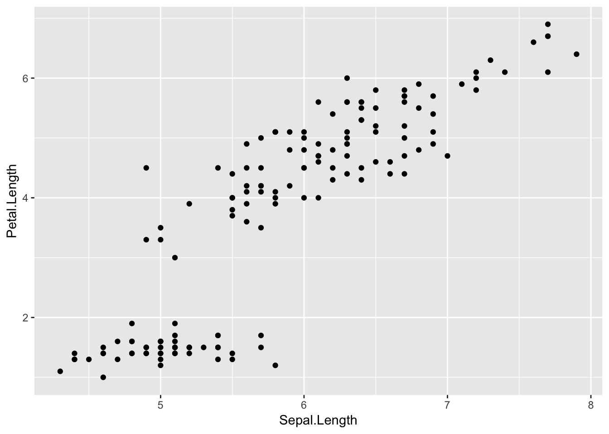
qplot(data = ChickWeight, x = weight)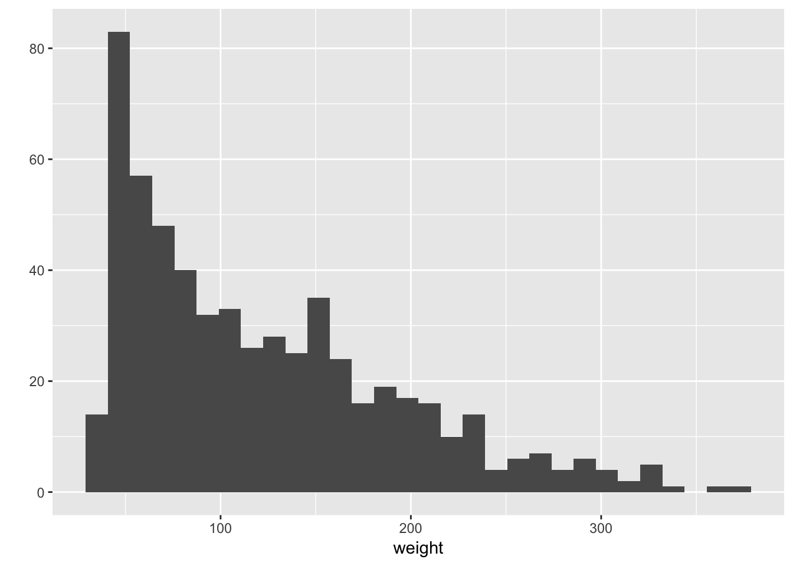
qplot(data = InsectSprays, x = spray, y = count, geom="boxplot")gglot2パッケージがなくても，Rで標準で入っているplot()でもグラフを作成することができる（ただし，見た目は良くない）。
plot(iris$Sepal.Length, iris$Petal.Length)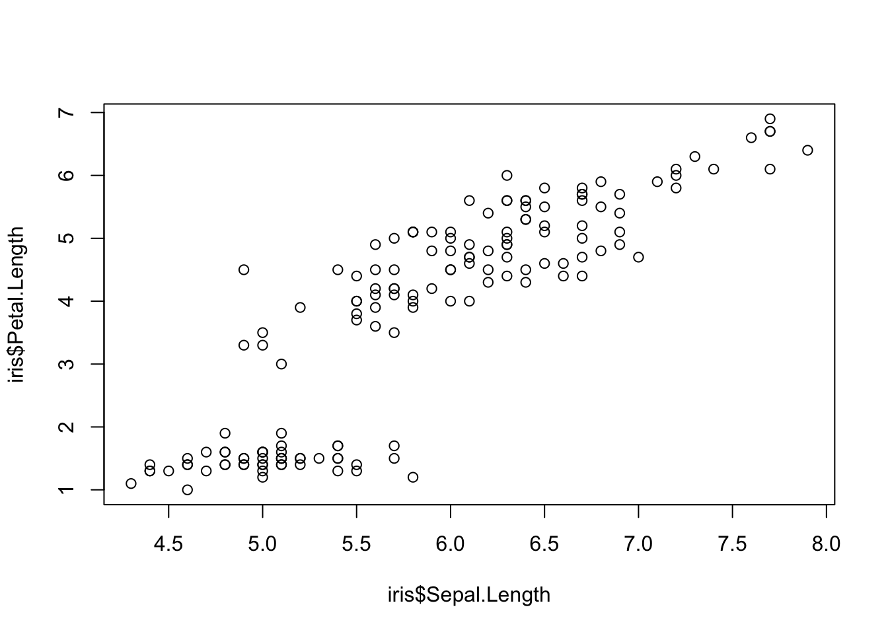
hist(ChickWeight$weight)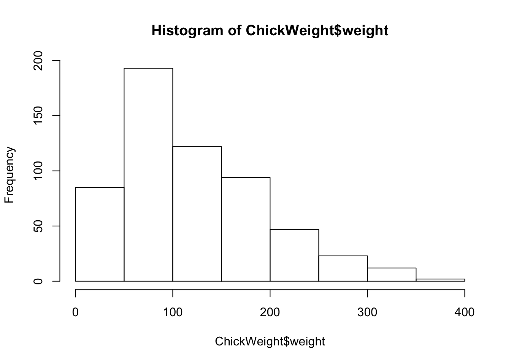
boxplot(InsectSprays$count~InsectSprays$spray)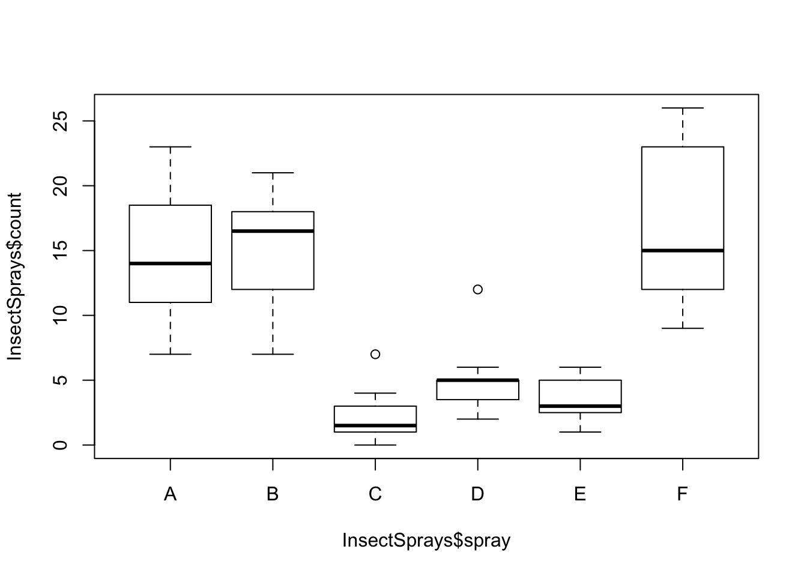
今後もわからないことが出てきたら，関数のヘルプを参照すること（英語だが）。あるいはインターネットで検索する。
#関数の前に?を入れて実行すると，ヘルプが表示される。あるいはhelp()で囲む
?qplot
help(qplot)練習問題
問１
Rにサンプルデータとして入っているChickWeightを使ってグラフを作ってみよう。
head(ChickWeight)## Grouped Data: weight ~ Time | Chick
## weight Time Chick Diet
## 1 42 0 1 1
## 2 51 2 1 1
## 3 59 4 1 1
## 4 64 6 1 1
## 5 76 8 1 1
## 6 93 10 1 1ChickWeightには，ひよこを対象とした実験データが入っている。食事を変えると体重が変化するかどうかを調べた。まず，ChickWeightと入力して，データの中身を確認する。- 日数（
Time）と体重（weight）の間の関係を散布図で確認する。 - 体重（
weight）の分布をヒストグラムで確認する。 - 食事の種類（
Diet）ごとに体重（weight）の分布を箱ひげ図を作って確認する。
問２
ある学校の生徒を対象に行った調査の結果，YouTubeの視聴時間と学校での成績の間の相関係数を測ったところ，\(r = - .56\)であった。この調査の結果から，「YouTubeを見るほど，学力が下がる」という結論を出せるか？別の解釈が可能だと思うのならば，その解釈を述べよ。また，「YouTubeを見るほど，学力が下がる」ということを調べるためにはどうすれば良いと思うかを述べよ。
参考文献
中室牧子・津川友介 (2017). 「原因と結果」の経済学ーデータから真実を見抜く思考 ダイヤモンド社